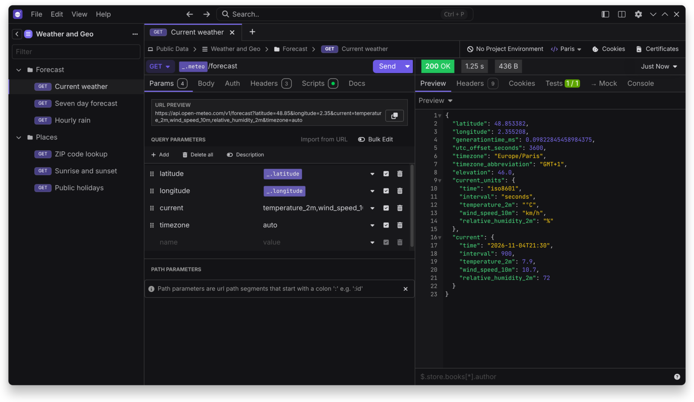

Offline first
The only network calls are the ones you ask for, plus an update check you can turn off.
Restless is offline-first and open source. No account, no telemetry, and your data stays on your machine.
Free. Apache-2.0. Windows, macOS and Linux.

Every core feature works with no network and no account.
The only network calls are the ones you ask for, plus an update check you can turn off.
Open any folder and keep collections as YAML, with commits, branches and history. No remote needed.
Environments, request chaining, scripts, cookies, and OAuth, AWS IAM, NTLM and more.
An OpenAPI editor with live preview and Spectral linting.
Scripts, test suites and a collection runner, in the app or in CI with rl.
Create mock routes and serve them from a mock server you host.
Optional AI, MCP, secret managers and Git sign-in stay off until you enable them, using your own keys.
Themes, accent colors, shortcuts and Insomnia plugins.
Imports Insomnia, Postman, OpenAPI, HAR and cURL. Your Insomnia YAML works as it is.
Windows and macOS builds aren't signed yet, so you may see a warning on first launch.
| Windows | Installer (.exe) |
|---|---|
| macOS, Apple Silicon | Disk image (.dmg) |
| Linux | AppImage .deb .rpm .tar.gz |
# Run your collections in CI with the rl command
rl run collection -w ./api.yaml --ci -e staging